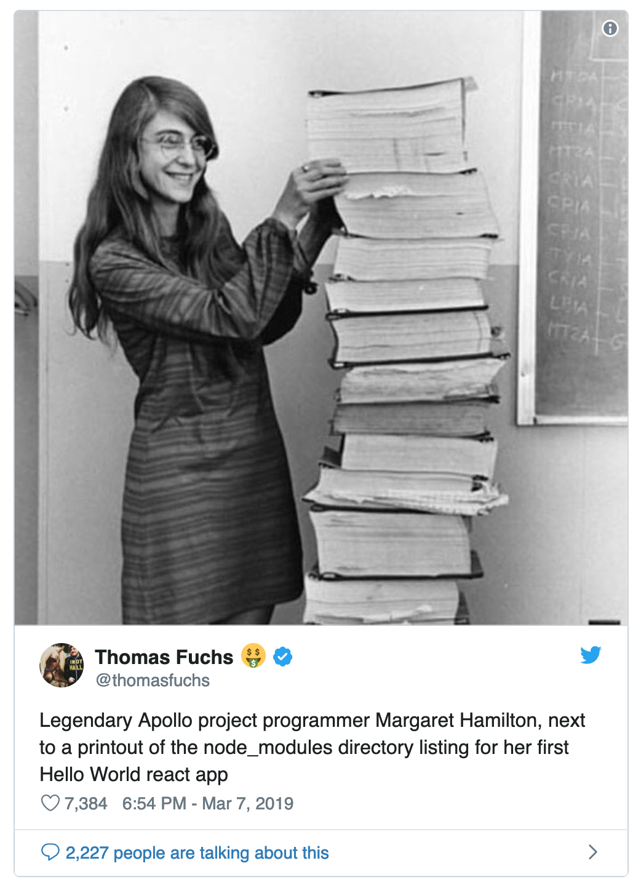

class: center, middle  --- class: center, middle, inverse # A history of<br>programming languages --- ## Presentation overview * Old languages * Mature languages * Modern languages * Really old languages * Too modern languages --- ## Dennis Ritchie and Ken Thompson .left-column[  ] .right-column[  ] --- ## BCPL (1967) Basic Combined Programming Language ```bcpl GET "LIBHDR" LET START() = VALOF $( FOR I = 1 TO 5 DO WRITEF("%N! = %I4*N", I, FACT(I)) RESULTIS 0 $) AND FACT(N) = N = 0 -> 1, N * FACT(N - 1) ``` --- ## B (1969) ```b printn(n, b) { extrn putchar; auto a; if (a = n / b) printn(a, b); putchar(n % b + '0'); } ``` --- ## C (1972) ```c calling_function() { long test1; register test2; test1 = some_function(); if (test1 > 0) test2 = 0; else test2 = other_function(); return test2; } ``` --- ## C++ (1985) Inside Bjarne Stroustrup mind: > Maybe I should create a language like C, but with classes. I’ll name it ‘C with Classes’. One year later: > Maybe that was not such a good name. I’ll rename it to C++. Yeah. That’s better. <br> ```cpp #include <iostream> int main() { std::cout << "Hello, world!\n"; } ``` --- ## Perl (1987) ```perl #!/usr/bin/perl use strict; use warnings; use IO::Handle; my ( $remaining, $total ); $remaining = $total = shift(@ARGV); STDOUT->autoflush(1); while ( $remaining ) { printf ( "Remaining %s/%s \r", $remaining--, $total ); sleep 1; } print "\n"; ``` --- ## Functional Programming Languages and Computer Architecture Conferece (FPCA ’87) --- ## Miranda (1985) --- ## Miranda (1985) ```haskell subsets [] = [[]] subsets (x:xs) = [[x] ++ y | y <- ys] ++ ys where ys = subsets xs ``` --- ## Haskell (1990) ```haskell quickSort :: Ord a => [a] -> [a] quickSort [] = [] quickSort (x:xs) = quickSort [a | a <- xs, a < x] ++ [x] ++ quickSort [a | a <- xs, a >= x] quickSort [] = [] quickSort (x:xs) = quickSort (filter (<x) xs) ++ [x] ++ quickSort (filter (>=x) xs) ``` --- <img src="images/CampanileMtTamalpiasSunset-original.jpg" alt="tower" style="width: 450px; float: right;"> --- ## Sather (1990) ```sather class MAIN is main is loop i := 1.upto!(10); #OUT + i + "\n"; end; end; end; ``` --- ## Python (1990) ```python from heapq import merge def merge_sort(m): if len(m) <= 1: return m middle = len(m) // 2 left = m[:middle] right = m[middle:] left = merge_sort(left) right = merge_sort(right) return list(merge(left, right)) ``` --- ## Ruby (1995) ```ruby # Calculate Pi using the Arithmetic Geometric Mean of 1 and 1/sqrt(2) require 'flt' Flt::BinNum.Context.precision = 8192 a = n = 1 g = 1 / Flt::BinNum(2).sqrt z = 0.25 (0..17).each{ x = [(a + g) * 0.5, (a * g).sqrt] var = x[0] - a z -= var * var * n n += n a = x[0] g = x[1] } puts a * a / z ``` --- ## PHP (1995) ```php function binary_search( $array, $secret, $start, $end ) { $guess = (int)($start + ( ( $end - $start ) / 2 )); if ( $end < $start) return -1; if ( $array[$guess] > $secret ) return (binary_search( $array, $secret, $start, $guess )); if ( $array[$guess] < $secret ) return (binary_search( $array, $secret, $guess, $end ) ); return $guess; } ``` --- ## Java (1995) ```java package fibsandlies; import java.util.HashMap; public class FibCalculator extends Fibonacci implements Calculator { private static Map<Integer, Integer> memoized = new HashMap<Integer, Integer>(); public static void main(String[] args) { memoized.put(1, 1); memoized.put(2, 1); System.out.println(fibonacci(12)); //Get the 12th Fibonacci number and print to console } public static int fibonacci(int fibIndex) { if (memoized.containsKey(fibIndex)) { return memoized.get(fibIndex); } else { int answer = fibonacci(fibIndex - 1) + fibonacci(fibIndex - 2); memoized.put(fibIndex, answer); return answer; } } } ``` --- ## JavaScript (1995) ```js Array.prototype.sleepSort = function(callback) { const res = []; for (let n of this) setTimeout(() => { res.push(n); if (this.length === res.length) callback(res); }, n + 1); return res; }; [1, 9, 8, 7, 6, 5, 3, 4, 5, 2, 0].sleepSort(console.log); ``` --- ## C\# (2000) James Gosling: > C# is sort of Java with reliability, productivity and security deleted. ```csharp public static int ModInverse(this int a, int m) { if (m == 1) return 0; int m0 = m; (int x, int y) = (1, 0); while (a > 1) { int q = a / m; (a, m) = (m, a % m); (x, y) = (y, x - q * y); } return x < 0 ? x + m0 : x; } ``` --- ## Fortran (1957) ```f C AREA OF A TRIANGLE WITH A STANDARD SQUARE ROOT FUNCTION C INPUT - TAPE READER UNIT 5, INTEGER INPUT C OUTPUT - LINE PRINTER UNIT 6, REAL OUTPUT C INPUT ERROR DISPLAY ERROR OUTPUT CODE 1 IN JOB CONTROL LISTING READ INPUT TAPE 5, 501, IA, IB, IC 501 FORMAT (3I5) IF (IA) 777, 777, 701 701 IF (IB) 777, 777, 702 702 IF (IC) 777, 777, 703 703 IF (IA+IB-IC) 777, 777, 704 704 IF (IA+IC-IB) 777, 777, 705 705 IF (IB+IC-IA) 777, 777, 799 777 STOP 1 799 S = FLOATF (IA + IB + IC) / 2.0 AREA = SQRTF( S * (S - FLOATF(IA)) * (S - FLOATF(IB)) * + (S - FLOATF(IC))) WRITE OUTPUT TAPE 6, 601, IA, IB, IC, AREA 601 FORMAT (4H A= ,I5,5H B= ,I5,5H C= ,I5,8H AREA= ,F10.2, + 13H SQUARE UNITS) STOP END ``` --- ## John Backus <img src="images/John_Backus_2.jpg" alt="john" height="400px"> --- ## Lisp (1958) ```lisp (defun square (x) "Calculates the square of the single-float x." (declare (single-float x) (optimize (speed 3) (debug 0) (safety 1))) (the single-float (* x x))) ``` --- ## John McCarthy <img src="images/John_McCarthy_Stanford.jpg" alt="john" height="400px"> --- ## COBOL (1959) Common business-oriented language ```cbl ADD 1 TO x ADD 1, a, b TO x ROUNDED, y, z ROUNDED ADD a, b TO c ON SIZE ERROR DISPLAY "Error" END-ADD ADD a TO b NOT SIZE ERROR DISPLAY "No error" ON SIZE ERROR DISPLAY "Error" ``` --- ## Grace Hopper <img src="images/Commodore_Grace_M._Hopper,_USN_(covered).jpg" alt="grace" height="400px"> --- ## Simula (1962) ```simula Real Procedure Sigma (k, m, n, u); Name k, u; Integer k, m, n; Real u; Begin Real s; k:= m; While k <= n Do Begin s:= s + u; k:= k + 1; End; Sigma:= s; End; ``` --- ## BASIC (1964) Beginner's All-purpose Symbolic Instruction Code ```basic 10 INPUT "What is your name: "; U$ 20 PRINT "Hello "; U$ 30 INPUT "How many stars do you want: "; N 40 S$ = "" 50 FOR I = 1 TO N 60 S$ = S$ + "*" 70 NEXT I 80 PRINT S$ 90 INPUT "Do you want more stars? "; A$ 100 IF LEN(A$) = 0 THEN GOTO 90 110 A$ = LEFT$(A$, 1) 120 IF A$ = "Y" OR A$ = "y" THEN GOTO 30 130 PRINT "Goodbye "; U$ 140 END ``` --- ## Pascal (1970) ```pp while a <> b do WriteLn('Waiting'); if a > b then WriteLn('Condition met') {no semicolon allowed!} else WriteLn('Condition not met'); for i := 1 to 10 do {no semicolon for single statements allowed!} WriteLn('Iteration: ', i); repeat a := a + 1 until a = 10; case i of 0 : Write('zero'); 1 : Write('one'); 2 : Write('two'); 3,4,5,6,7,8,9,10: Write('?') end; ``` --- ## Niklaus Wirth <img src="images/Niklaus_Wirth,_UrGU.jpg" alt="niklaus" width="500px"> --- ## Prolog (1972) ```pl mother_child(trude, sally). father_child(tom, sally). father_child(tom, erica). father_child(mike, tom). sibling(X, Y) :- parent_child(Z, X), parent_child(Z, Y). parent_child(X, Y) :- father_child(X, Y). parent_child(X, Y) :- mother_child(X, Y). ``` --- ## Smalltalk (1972) ```smalltalk OrderedCollection extend [ cocktailSort [ |swapped| [ swapped := false. 1 to: (self size - 1) do: [ :i | (self at: i) > (self at: (i+1)) ifTrue: [ self swap: i and: (i+1). swapped := true ] ]. swapped ifFalse: [ ^ self ]. swapped := false. (self size - 1) to: 1 by: -1 do: [ :i | (self at: i) > (self at: (i+1)) ifTrue: [ self swap: i and: (i+1). swapped := true ] ]. swapped ] whileTrue: [ ]. ^ self ] ]. ``` --- ## Alan Kay <img src="images/Alan_Kay_(3097597186).jpg" alt="alan" width="600px"> --- ## Scala (2004) ```scala class Point( val x: Double, val y: Double, addToGrid: Boolean = false ) { import Point._ if (addToGrid) grid.add(this) def this() = this(0.0, 0.0) def distanceToPoint(other: Point) = distanceBetweenPoints(x, y, other.x, other.y) } object Point { private val grid = new Grid() def distanceBetweenPoints(x1: Double, y1: Double, x2: Double, y2: Double) = { math.hypot(x1 - x2, y1 - y2) } } ``` --- ## Clojure (2007) ```clj ;; print the source of `rem` (source rem) ;; => (defn rem "remainder of dividing numerator by denominator." {:added "1.0" :static true :inline (fn [x y] `(. clojure.lang.Numbers (remainder ~x ~y)))} [num div] (. clojure.lang.Numbers (remainder num div))) ``` --- ## Go (2009) ```go func main() { t := make(chan bool) go timeout(t) ch := make(chan string) go readword(ch) select { case word := <-ch: fmt.Println("Received", word) case <-t: fmt.Println("Timeout.") } } ``` --- ## Rust (2010) ```rs use std::cmp::Ordering::*; fn binary_search<T: Ord>(arr: &[T], elem: &T) -> Option<usize> { let mut size = arr.len(); let mut base = 0; while size > 0 { size /= 2; let mid = base + size; base = match arr[mid].cmp(elem) { Less => mid, Greater => base, Equal => return Some(mid) }; } None } ``` --- ## Erlang (1986) ```er %% qsort:qsort(List) %% Sort a list of items -module(qsort). -export([qsort/1]). qsort([]) -> []; qsort([Pivot|Rest]) -> qsort([Front || Front <- Rest, Front < Pivot]) ++ [Pivot] ++ qsort([Back || Back <- Rest, Back >= Pivot]). ``` --- ## Elixir (2011) ```ex defmodule Binary do def search(list, value), do: search(List.to_tuple(list), value, 0, length(list)-1) def search(_tuple, _value, low, high) when high < low, do: :not_found def search(tuple, value, low, high) do mid = div(low + high, 2) midval = elem(tuple, mid) cond do value < midval -> search(tuple, value, low, mid-1) value > midval -> search(tuple, value, mid+1, high) value == midval -> mid end end end list = [0,1,4,5,6,7,8,9,12,26,45,67,78,90,98,123,211,234,456,769,865,2345,3215,14345,24324] Enum.each([0,42,45,24324,99999], fn val -> case Binary.search(list, val) do :not_found -> IO.puts "#{val} not found in list" index -> IO.puts "found #{val} at index #{index}" end end) ``` --- ## Julia (2012) ```jl function kinggraph(N) graph = SimpleWeightedGraph(N*N) for row in 1:N, col in 1:N, p in surround(row, col, N) origin = vfromcart(CartesianIndex(row, col), N) targ = vfromcart(p, N) hcost = (targ in obstacles || origin in obstacles) ? 100 : 1 add_edge!(graph, origin, targ, hcost) end graph end ``` --- ## Swift (2014) ```swift func binarySearch<T: Comparable>(xs: [T], x: T) -> Int? { var (low, high) = (0, xs.count - 1) while low <= high { switch (low + high) / 2 { case let mid where xs[mid] > x: high = mid - 1 case let mid where xs[mid] < x: low = mid + 1 case let mid: return mid } } return nil } ``` --- ## Chris Lattner <img src="images/ChrisPhoto3-Large.jpg" alt="chris" height="500px"> --- class: center, middle, inverse ## The End